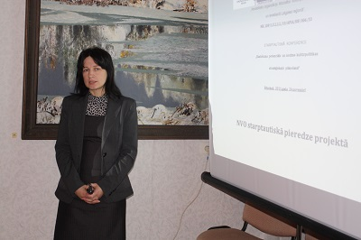

Mēs
Zaļais Meridiāns
Biedrības un nodibinājumi
20.05.2016
Biedrības un nodibinājuma jēdziens
Biedrība ir brīvprātīga personu apvienība, kas nodibināta, lai sasniegtu statūtos noteikto mērķi, kam nav pelņas gūšanas rakstura.
Nodibinājums, arī fonds, ir mantas kopums, kurš nodalīts dibinātāja noteiktā mērķa sasniegšanai, kam nav peļņas gūšanas rakstura.
Biedrības un nodibinājuma atbildības norobežošana
- Biedrība un nodibinājums par savām saistībām atbild ar visu savu mantu.
- Biedrība neatbild par biedra saistībām. Biedrs neatbild par biedrības saistībām.
- Nodibinājums neatbild par dibinātāja saistībām. Dibinātājs neatbild par nodibinājuma saistībām.
Biedrības un nodibinājuma tiesības veikt saimniecisko darbību
- Biedrībai un nodibinājumam ir tiesības papilddarbības veidā veikt saimniecisko darbību, kas saistīta ar sava īpašuma uzturēšanu vai izmantošanu, kā arī veikt citu saimniecisko darbību, lai sasniegtu biedrības un nodibinājuma mērķus.
- Biedrības un nodibinājuma ienākumus drīkst izmantot vienīgi statūtos noteiktā mērķa sasniegšanai. Peļņu, kas gūta no biedrības un nodibinājuma veiktās saimnieciskās darbības, nedrīkst sadalīt starp biedrības biedriem vai nodibinājuma dibinātājiem.
Brīvprātīgā darba organizēšana
- Biedrības un nodibinājumi brīvprātīgo darbu organizē saskaņā ar Brīvprātīgā darba likumu.
- Brīvprātīgais darbs ir organizēts un uz labas gribas pamata veikts fiziskās personas fizisks vai intelektuāls bezatlīdzības darbs sabiedrības labā.
- Brīvprātīgajam darbam nav peļņas gūšanas nolūka.
Dibinātāji
- Par biedrības dibinātājiem var būt fiziskās un juridiskās personas, kā arī tiesībspējīgas personālsabiedrības.
- Dibinātāju skaits nedrīkst būt mazāks par diviem.
Biedrības pārvaldes institūcijas
- Biedrības pārvaldes institūcijas ir biedru sapulce (kopsapulce) un valde.
- Biedrības augstākā institūcija ir biedru sapulce.
- Visiem biedrības biedriem ir tiesības piedalīties biedru sapulcē, ja likumā nav noteikts citādi. Biedrs var piedalīties biedru sapulcē arī ar pārstāvja starpniecību, ja biedrības statūtos nav noteikts citādi. Pilnvara piedalīties un balsot biedru sapulcē izdodama rakstveidā.
Biedrība "Mediju radošā studija"
Biedrības mērķis – veidot radošuma izpausmes, izglītot, iedvesmot un paust aktīvu dzīves pozīciju. Darbojas kopš 2001.gada 26.janvāra.

Zīmīgākie projekti:
- "Kā uzsākt savu uzņēmējdarbību un kļūt par aktīvu darba tirgus daļu"
- "Jauno radiotehniķu un auklīšu kopienas Austrumlatvijā"
- "Stratēģiskā plānošana kā efektīva metode Novovolinskas pilsētas ilgtspējīgai attīstībai"
- "Nevalstisko organizāciju līdzdalība kultūrpolitikas plānošanā un ieviešanā Latgales reģionā"
World-Our Home
The main goal of the organisation: Promotion of European active citizenship, solidarity, multiculturalism, human rights and other values as well as non-formal education on local, regional and European level.
The main tasks:
- Promote young peoples active citizenship in general and their European citizenship in particular.
- Develop solidarity and promote tolerance among young people, in particular in order to foster social cohesion in the European Union.
- Foster mutual understanding between young people in different countries.
- Contribute to developing the quality of support systems for youth activities and the capabilities of civil society organisations in the youth field.
- Promote European cooperation in the youth field.
"Zaļais Meridiāns" biedrības mērķi:
- Jaunatnes veselīga dzīvesveida veicināšana;
- Jauniešu brīvā laika organizēšana;
- Bērnu un jauniešu, ar īpašām vajadzībām, integrācija sabiedrībā;
- Starptautisko izglītības un kultūras apmaiņas programmu realizācija;
- Profesionālas orientācijas pasākumu veikšana jauniešiem;
- Eiropas kultūras un mākslas mantojuma apzināšana;
- Sabiedrības izglītošana un mūžizglītības pasākumu organizēšana;
- Kultūras apmaiņas programmu realizācija;
- Patērētāju izglītošana; tiesības un aizsardzība;
- Bezdarbnieku apmācība un uzņēmējdarbības veicināšana;
- Sabiedrības saliedētība un integrācija;
- Dzīves vides aizsardzība un sakopšana;
- Vides izglītība, popularizēt garīgās un tikumīgās vērtības;
- Veidot alternatīvās izglītības iestādi, balstītu uz humānās un netradicionālām pedagoģijas idejām, izmantojot individuālās apmācību metodes;
- Līdzdarboties lēmumu izstrādē un ieviešanā pašvaldības un valsts līmenī, stratēģisko dokumentu izstrādē un ieviešanā; vienlaikus veicot izglītības darbu jauniešu politiskās kultūras veicināšanā un aktīvas dzīves pozīcijas veidošanā savā pašvaldībā, kā arī savā valstī.
Mūsu dalība projektos:
- "Europe in canvas, I am brush" August, 2011, Amasra;
- "True born musician" September, 2010, Edirne;
- "How will the weather be" August, 2011, Sakarya;
- "Unemployment and Hunger" August, 2011, Sinop;
- "Keep love, let live" 02-09 July, 2012, Bilecik;
- "Make a difference get a job" 5-12 September, 2012, Yalova;
- "Useless things" 5-11 June, 2013, Rize;
- "Feel the earth" 4-11 May, 2014, Unue;
- "Survival" 20–27 June, 2014, Trabzon;
- "Şirince of Maya Calender" 5-11 November, 2014, Izmir.
- "Aktive vs Pasive" 11-19.12.2014 Busteni, Romania;
- "Cinema research" 10-20.09.2015 Azores, Sant Miguel island Portugal.
- "Don't be a clown but learn from the clown" 20.01 - 31.01.2016 Lisbon, Sant Miguel island Portugal.
Biedrības vispārējs apraksts
Biedrība "Zaļais Meridiāns", dibināta 2007. gadā, darbojas Rēzeknes novadā un piesaista jauniešus no visas Latvijas, tā popularizējot savu pagastu un novadu. Organizācijā darbojas 37 biedri (jaunieši, vecumā no 15 līdz 30 gadiem, un jauniešu darba entuziasti neatkarīgi no vecuma. Biedrības biedriem raksturīga "zaļā domāšana", kas palīdz realizēt biedrības mērķus. Biedrības darbības galvenie mērķi: Jaunatnes veselīga dzīvesveida veicināšana un jauniešu brīvā laika organizēšana; starptautisko izglītības un kultūras apmaiņas programmu realizācija; Eiropas kultūras un mākslas mantojuma apzināšana; sabiedrības izglītošana un mūžizglītības pasākumu organizēšana; dzīves vides aizsardzība un sakopšana.
Vienlaicīgi, mērķi paredz arī palīdzību sociālo jautājumu risināšanā jauniešu vidū. Organizācijas sadarbības partneri ir Griškānu pagasta pārvalde, Latgales biedrības, kā piemēram organizācija: Pasaule mūsu mājās" un citu Eiropas valstu (Turcijas, Rumānijas, Portugāles, Spānijas, Francijas, Itālijas, Igaunijas, Lietuvas) nevalstiskās organizācijas. Biedrība organizē sakopšanas talkas, apmācību seminārus un studiju apļus, vakarēšanas un norūdīšanās pasākumus. Visvairāk entuzisasma tiek ieguldīts, lai organizētu ES projektus Erasmus+ sadaļā, jauniešu starptautiskās apmaiņas programmas, kur dažādu tautu jaunieši apmainās ar savu pieredzi un pasaules redzējumu.